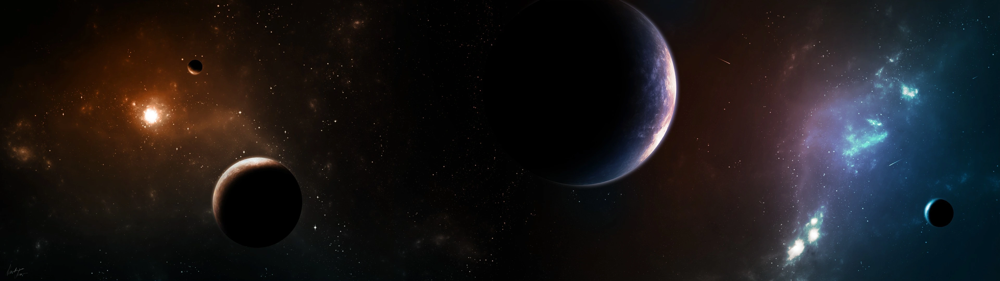

⚙️ Настройки
Выберите категорию
🛸 НЛО и дым
🕒 Часы
← Назад
Настройки НЛО
Радиус НЛО:
Фактор ширины:
Фактор высоты:
Порог дистанции НЛО:
Скорость НЛО:
Настройки дыма
Размер дыма:
Частота:
Угасание:
Разлёт:
Цвет дыма:
Дым до курсора:
Сбросить настройки
← Назад
Настройки часов
Размер часов (%):
Ширина (px):
Высота (px):
Скругление (%):
Формат времени:
24ч
12ч
Настройки шрифта
Шрифт дня (px):
Шрифт времени (px):
Шрифт даты (px):
Отступ день-время (px):
Отступ время-дата (px):
Цвет текста:
Шрифт:
Arial
Orbitron
Roboto
Courier New
Arial
Verdana
Impact
Times New Roman
Georgia
Comic Sans MS
Monaco
Segoe UI
Tahoma
Trebuchet MS
Lucida Console
──────────
📁 Загрузить свой шрифт...
Свечение:
Яркость свечения (px):
Прозрачность фона (%):
Слой часов:
Нормальный
Нормальный
За звёздами
За астероидами
За космосом
Сбросить позицию
Сбросить всё
Понедельник
00:00
Январь 1